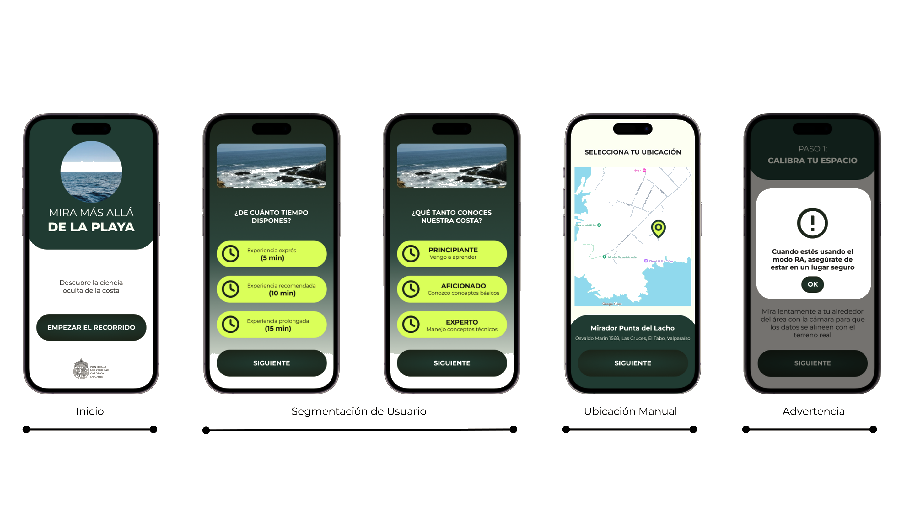
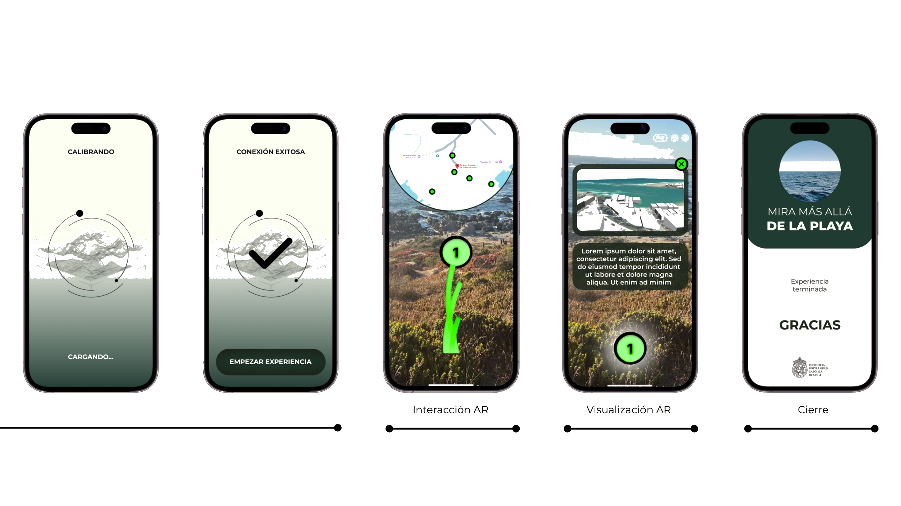

<style>
main h1 { font-size: 1.15rem; font-weight: 700; padding-bottom: .3rem; border-bottom: 1px solid var(--border); margin-bottom: .6rem; }
main h2 { font-size: 1.15rem; font-weight: 700; margin: 2rem 0 .6rem; padding-bottom: .3rem; border-bottom: 1px solid var(--border); }
main p  { font-size: .95rem; line-height: 1.7; margin-bottom: .85rem; color: var(--dark); }
main ul { padding-left: 1.4rem; margin-bottom: .85rem; }
main ul li { font-size: .92rem; line-height: 1.65; margin-bottom: .3rem; color: var(--dark); }
main a  { color: var(--blue); }

.project-info { display: grid; grid-template-columns: auto 1fr; gap: .4rem 1.1rem; margin: .75rem 0 1.5rem; }
.project-info dt { font-weight: 600; font-size: .88rem; color: var(--muted); white-space: nowrap; padding-top: .1rem; }
.project-info dd { font-size: .88rem; line-height: 1.5; }
.team-list { list-style: none; padding: 0; margin: .5rem 0 1.2rem; display: flex; flex-direction: column; gap: .4rem; }
.team-list li { font-size: .9rem; display: flex; align-items: baseline; gap: .5rem; flex-wrap: wrap; }
.team-list .role { font-size: .78rem; color: var(--muted); font-weight: 500; }
.team-section { font-size: .78rem; font-weight: 600; color: var(--muted); text-transform: uppercase; letter-spacing: .05em; margin: .9rem 0 .3rem; }
.course-meta { font-size: .88rem; color: var(--muted); margin-bottom: 1.25rem; }

.fig-row { display: grid; grid-template-columns: 1fr 1fr; gap: 1rem; margin: 1.25rem 0 1.5rem; }
.fig-wrap { margin: 1.25rem 0 1.5rem; }
.fig-row .fig-wrap { margin: 0; }
.fig-wrap img { width: 100%; border-radius: 6px; border: 1px solid var(--border); display: block; background: #f9f9f9; }
.fig-caption { font-size: .8rem; color: var(--muted); margin-top: .45rem; line-height: 1.45; }
.fig-caption strong { color: var(--dark); font-weight: 600; }
@media (max-width: 600px) { .fig-row { grid-template-columns: 1fr; } }
</style>

<main>
  <h1>Photorealistic Modeling of Wave Propagation Towards the Coasts of Chile: Bridging the Gap Between Fundamental Research and Risk Communication Through WebGPU and Augmented Reality</h1>

  <p class="course-meta">UC-VRI – Avanza UC &middot; <a href="../">Research</a></p>

  <dl class="project-info">
    <dt>Funding</dt>   <dd>UC-VRI – Avanza UC</dd>
    <dt>Duration</dt>  <dd>March 2026 – February 2027</dd>
    <dt>Budget</dt>    <dd>~$38K USD</dd>
    <dt>Role</dt>      <dd>Principal Investigator</dd>
  </dl>

  <h2>Team</h2>
  <p class="team-section">Principal Researchers</p>
  <ul class="team-list">
    <li>Rodrigo Cienfuegos <span class="role">UC Chile</span></li>
    <li>Leonel Merino <span class="role">UC Chile</span></li>
  </ul>
  <p class="team-section">Co-Investigators</p>
  <ul class="team-list">
    <li>José Galaz <span class="role">UC Chile</span></li>
    <li>Patrick Lynett <span class="role">University of Southern California</span></li>
  </ul>
  <p class="team-section">Graduate Students</p>
  <ul class="team-list">
    <li>Damyan Santander <span class="role">UC Chile</span></li>
  </ul>
  <p class="team-section">Undergraduate Researchers (IPRE)</p>
  <ul class="team-list">
    <li>María Paz Oviedo <span class="role">UC Chile</span></li>
    <li>Fernanda Loyola <span class="role">UC Chile</span></li>
  </ul>
  <p class="team-section">Research Interns</p>
  <ul class="team-list">
    <li>Corentin D'Haussy <span class="role">ENSTA Paris</span></li>
  </ul>

  <h2>Description</h2>

  <p>This project proposes the design, implementation, and evaluation of a mobile augmented reality prototype for the photorealistic and interactive visualization of wave phenomena and coastal risks along the Chilean shoreline. The research integrates high-fidelity numerical wave models with immersive visualization technologies on iOS devices, using modern rendering techniques and computer graphics to dynamically represent complex hydrodynamic information in its real, in-situ context. The resulting system will allow non-specialist users to explore wave scenarios, heights, and directions directly overlaid on the physical coastal environment through mobile augmented reality.</p>

  <p>The project encompasses the development of an interactive experience oriented toward scientific communication and public understanding of coastal risks. It incorporates principles of data visualization, spatial narrative, and immersive experience design. The process includes user and context-of-use analysis, museographic design of the experience, technical implementation of the application, and progressive validation through pilot testing and field evaluations.</p>

  <div class="fig-wrap">
    
    <p class="fig-caption"><strong>Fig. 1.</strong> Onboarding flow of the mobile AR prototype. Users are segmented by experience level and available time, select their coastal location on a map, and receive a safety notice before entering the AR experience.</p>
  </div>

  <p>The experimental evaluation of the system will involve non-specialist participants in a real coastal environment at Punta de Lobos, Pichilemu. The study will examine the impact of immersive visualizations on participants' understanding of hydrodynamic phenomena, their identification of potential hazards, and their perceptions of usability and cognitive load. Standardized instruments including the System Usability Scale (SUS) and the NASA Task Load Index (NASA-TLX) will be employed alongside interaction metrics and direct observation.</p>

  <div class="fig-wrap">
    
    <p class="fig-caption"><strong>Fig. 2.</strong> AR interaction and visualization screens. After spatial calibration, the prototype overlays real-time wave simulations onto the physical coastal environment, enabling users to explore hydrodynamic data in situ.</p>
  </div>

  <h2>Keywords</h2>
  <ul>
    <li>Augmented Reality</li>
    <li>Coastal Risk</li>
    <li>WebGPU</li>
    <li>Data Visualization</li>
    <li>Immersive Visualization</li>
    <li>Citizen Science</li>
    <li>HCI</li>
  </ul>
</main>
